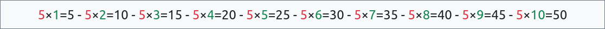

M Souheil vient de louer une maison. Le loyer a été fixé à 400DT par mois. Une augmentation annuelle de 8% a
été prévue à la fin de chaque année.
On demande de :
Calculer le loyer après un an ? Après deux ans ? Et dans trois ans ?
Remplir le tableau suivant :
Année
Loyer
0
400DT
1
400 × (1+8/100) = 432 DT
2
?
3
?
Calculer le loyer de l'année n en fonction du loyer de l'année n-1, on
suppose une augmentation annuelle de p%, le loyer initial étant égal à l0.
Ecrire l'algorithme d'un programme qui permet de calculer et d'afficher le montant du loyer pour toutes
les années allant de l'année 0 à la nème année.
Calculateur du loyer 1 - Correction
Calculer le loyer après un an ? Après deux ans ? Et dans trois ans ?
Remplir le tableau suivant :
Année
Loyer
0
400DT
1
400 × (1+8/100) = 432 DT
2
432 × (1+8/100) = 466.560 DT
3
466.560 × (1+8/100) = 503.884 DT
Calculer le loyer de l'année n en fonction du loyer de l'année n-1, on
suppose une augmentation annuelle de p%, le loyer initial étant égal à l0.
loyer0 = l0
loyern = loyern-1 × (1 + p / 100)
Ecrire l'algorithme d'un programme qui permet de calculer et d'afficher le montant du loyer pour toutes
les années allant de l'année 0 à la nème année.
Algorithme calcul_loyer_1
Début
Ecrire("Donner le loyer initial ? "); Lire(l0)
Ecrire("Donner le taux d'intérêt annuel ? "); Lire(p)
Ecrire("Donner le nombre d'années ? "); Lire(n)
l ← l0
Pour i de 0 à n Faire
Ecrire("Année :", i, " - Loyer :", l, "DT")
l ← l * (1 + p / 100)
Fin Pour
Fin
Objet
Type/Nature
l0, l, p
Réel
i, n
Entier
Structure itérative complète
Une structure itérative complète est utilisée pour répéter une suite d'instructions, un nombre fini
de fois connu à l'avance.
Forme 1
Compter de 0 à n-1 par pas de 1, n > 0.
Pour cpt de 0 à n-1 Faire
// Traitements
Fin Pour
for cpt in range(n):
# Traitements
Forme 2
Compter de d à f par pas de 1, f > d.
Pour cpt de d à f Faire
// Traitements
Fin Pour
for cpt in range(d, f+1):
# Traitements
Forme 3
Décompter de d à f par pas de -1, f < d.
Pour cpt de d à f [pas=-1] Faire
// Traitements
Fin Pour
for cpt in range(d, f-1, -1):
# Traitements
Calculateur de loyer 2
Maintenant, M Souheil veut savoir combien il lui faut d'années pour payer plus que le double de son loyer
initial.
Calculer combien d'années il lui faudra pour dépasser le double du loyer initial dans les conditions
suivantes :
Loyer initial : 600DT
Intérêt annuel : 35%
Année
Loyer
0
600DT
1
600 × (1+35/100) = 810 DT
2
?
3
?
Ecrire l'algorithme d'un programme qui étant donné le loyer initial l0 et le taux
d'intérêt annuel p calcule et affiche le nombre d'années nécessaires pour que le loyer
dépasse le double du loyer initial.
Calculateur du loyer 2 - Correction
Calculer combien d'années il lui faudra pour dépasser le double du loyer initial dans les conditions
suivantes :
Loyer initial : 600DT
Intérêt annuel : 35%
Année
Loyer
0
600DT
1
600 × (1+35/100) = 810 DT
2
810 × (1+35/100) = 1093.5
3
1093.5 × (1+35/100) = 1476.225
Ecrire l'algorithme d'un programme qui étant donné le loyer initial l0 et le taux
d'intérêt annuel p calcule et affiche le nombre d'années nécessaires pour que le loyer
dépasse le double du loyer initial.
Solution 1
Algorithme calcul_loyer_2
Début
Ecrire("Donner le loyer initial ? "); Lire(l0)
Ecrire("Donner le taux d'intérêt annuel ? "); Lire(p)
l ← l0
a ← 0
TantQue (l ≤ 2*l0) Faire
Ecrire("Année :", a, " - Loyer :", l, "DT")
a ← a + 1
l ← l * (1 + p / 100)
Fin TantQue
Fin
Objet
Type/Nature
l0, l, p
Réel
a
Entier
Solution 2
Algorithme calcul_loyer_2
Début
Ecrire("Donner le loyer initial ? "); Lire(l0)
Ecrire("Donner le taux d'intérêt annuel ? "); Lire(p)
l ← l0
a ← 0
Répéter
Ecrire("Année :", a, " - Loyer :", l, "DT")
a ← a + 1
l ← l * (1 + p / 100)
Jusqu'à (l > 2*l0)
Fin
Objet
Type/Nature
l0, l, p
Réel
a
Entier
Structure itérative à condition d'arrêt (Répéter)
Une structure à condition d'arrêt est utilisée pour répéter une suite d'actions jusqu'à
ce qu'une condition soit vraie.
Répéter
// Traitements
Jusqu'à condition
# Traitements
while not condition:
# Traitements
Il n'existe pas une implémentation directe de répéter ... jusqu'à
(condition) en Python pour celà ou pourra l'implémenter comme suit :
# méthode 1
n = 0
while not (n > 0):
n = int(input("Donner n > 0 ?"))
# méthode 2
n = int(input("Donner n > 0 ? "))
while not (n > 0):
n = int(input("Donner n > 0 ?"))
# méthode 3
while True:
n = int(input("Donner n > 0 ?"))
if (n > 0):
break
Utilisez de préférence la 2e méthode.
Structure itérative à condition d'arrêt (Tant Que)
Une structure itérative à condition d'arrêt est, aussi, utilisée pour répéter une suite d'actions
tant que une condition est vraie.
TantQue condition Faire
// Traitements
Fin TantQue
while condition:
# Traitements
Structure itérative complète
Activité 1 - Table de multiplication
Ecrire un programme qui permet d'afficher les 10 premiers multiples d'un nombre n donné.

Table de multiplication
Solution
Algorithme Table_Multiplication
Début
Ecrire("Donner un nombre ? ")
Lire(n)
Pour i de 1 à 10 faire
Ecrire(n, "×", i, "=", n*i)
Fin Pour
Fin
Objet
Type/Nature
n, i
entier
Activité 2 - Consonnes
Ecrire un programme qui affiche uniquement les consonnes majuscules.
Les lettres en rouge sont les voyelles, tandis que les lettres en vert sont les consonnes.
Solution
Algorithme Consonnes
Début
Pour i de 0 à 25 faire
car ← chr(65 + i)
Si car ∉ ["A","E","I","O","U","Y"] Alors
Ecrire(car)
Fin Si
Fin Pour
Fin
Objet
Type/Nature
i
entier
car
caractère
Activité 3 - Promotion des employés
Ecrire un programme qui saisit les noms des n employés d'une société, ainsi
que leurs anciennetés anc, puis affiche ceux et celles qui méritent une promotion.
Il suffit de dépasser six ans d'ancienneté pour mériter une promotion.
Solution
Nouveau régime
Algorithme Promotion
Début
Ecrire("Nombre d'employés ? ")
Lire(n)
Pour i de 0 à n-1 faire
Ecrire("Nom employé n°", i+1, " ?")
Lire(noms[i])
Ecrire("Anciennté ", noms[i], " ? ")
Lire(anc[i])
Fin Pour
Ecrire("Les employés qui méritent une promotion sont :")
Pour i de 0 à n-1 faire
Si anc[i] >= 6 Alors
Ecrire(noms[i], " pour ", anc[i], " ans de services")
Fin Si
Fin Pour
Fin
TDNT
tab_ch = tableau de 20 chaîne
tab_en = tableau de 20 entier
Objet
Type/Nature
n, i
entier
noms
tab_ch
anc
tab_en
Ancien régime
Début Promotion
Ecrire("Nombre d'employés ? ")
Lire(n)
Pour i de 1 à n faire
Ecrire("Nom employé n° ", i, " ?")
Lire(noms[i])
Ecrire("Anciennté ", noms[i], " ? ")
Lire(anc[i])
Fin Pour
Ecrire("Les employés qui méritent une promotion sont :")
Pour i de 1 à n faire
Si anc[i] >= 6 Alors
Ecrire(noms[i], " pour ", anc[i], " ans de services")
Fin Si
Fin Pour
Fin
TDNT
tab_ch = tableau de 20 chaîne
tab_en = tableau de 20 entier
Objet
Type/Nature
n, i
entier
noms
tab_ch
anc
tab_en
Structure itérative à condition d'arrêt
Exemple 3 - Le jeu de l'échelle
Echelle 10 marches
En l'absence de ses parent, un enfant joue le jeu de l'échelle qui consiste à grimper une échelle de 10
marches.
L'enfant grimpe parfoisune seule marched'autres foisdeux
marches jusqu'à atteindre la dernière.
Combien de fois devra-t-il grimper pour atteindre le sommet ?
On demande d'écrire un programme pour simuler cette situation.
Attention : Si l'enfant est dans l'avant dernière marche et qu'il
décide de grimper, encore, deux marches, il risque de tomber.
Travail demandé
On donne l'algorithme suivant, et on demande de le terminer :
Algorithme Echelle
Début
pos ← 0 // position actuelle
cpt ← 0 // compteur nbre de fois
............... //(1)
// Sélectionner un nombre aléatoire 1 ou 2
nbm ← .............. //(2)
// Si l'enfant n'a pas atteint
// le sommet de l'échelle
Si ............... Alors //(3)
// Incrémenter :
// - le compteur du nbre de fois
// - la position actuelle
cpt ← ............... //(4)
pos ← ............... //(5)
Ecrire("Youssef a monté", nbm, "marches, il est à la position", pos)
Fin Si
............... //(6)
Ecrire("Youssef a atteint le sommet de l'échelle en", cpt, "fois")
Fin
{{op.op}}
{{op.op}}
Solution
Algorithme Echelle
Début
pos ← 0
cpt ← 0
Répéter
nbm ← aléa(1, 2)
Si pos+nbm ≤ 10 Alors
cpt ← cpt + 1
pos ← pos + nbm
Ecrire("Youssef a monté", nbm, "marches, il est à la position", pos)
Fin Si
Jusqu'à pos = 10
Ecrire("Youssef a atteint le sommet de l'échelle en", cpt, "fois")
Fin
Objet
Type/Nature
pos, cpt, nbm
entier
Exemple 4 - Devine mon nombre
Dans le jeu devine mon nombre l'ordinateur choisit un nombre dans l'intervalle [0, 99] et
l'utilisateur doit le retrouver.
Le nombre d'essais est illimité.
Le jeu se déroule comme suit :
L'ordinateur choisit un nombre au hasard secret dans l'intervalle [0, 99].
L'utilisateur fait un essai pour le deviner nombre.
L'ordinateur, vérifie :
Si nombre < secret, l'ordinateur indique que le nombre à deviner est plus grand
Si nombre > secret, l'ordinateur indique que le nombre à deviner est plus petit
Si le nombre = secret, l'utilisateur a trouvé le bon nombre et le jeu s'arrête,
sinon on répète les étapes 2 et 3
L'ordinateur affiche un message de félicitations
Jeu de devinette
J'ai choisi un nombre entre 0 et 99, et c'est à vous de le deviner.
{{message}}
Travail demandé
On donne l'algorithme suivant, et on demande de le terminer :
Algorithme devinette
Début
// choisir un nombre entre 0 et 99
secret ← ............... // (1)
............... // (2)
// Essai de l'utilisateur
Ecrire("Devine mon nombre [0, 99] ? ")
Lire(nombre)
Si ............... Alors // (3)
Ecrire("Plus grand que", nombre)
Sinon Si ............... Alors // (4)
Ecrire("Plus petit que", nombre)
Fin Si
Jusqu'à ............... //(5)
Ecrire("Félicitations tu as gagné!")
Ecrire(...............) (6)
Fin
{{op.op}}
{{op.op}}
Solution
Algorithme devinette
Début
// choisir un nombre entre 0 et 99
secret ← aléa(0, 99)
Répéter
// Essai de l'utilisateur
Ecrire("Devine mon nombre [0, 99] ? ")
Lire(nombre)
Si nombre < secret Alors
Ecrire("Plus grand que", nombre)
Sinon Si nombre > secret Alors
Ecrire("Plus petit que", nombre)
Fin Si
Jusqu'à nombre = secret
Ecrire("Félicitations tu as gagné!")
Ecrire("Le nombre caché est", secret)
Fin
Objet
Type/Nature
nombre, secret
entier
Activité 4 - Les 4 saisons
Roue des saisons
Ecrire un programme qui permet à l'utilisateur de saisir un mois ∈ [1, 12]. Puis affiche la saison
correspondante.
Hiver : Mois de Janvier à Mars
Printemps : Mois de Avril à Juin
Eté : Mois de Juillet à Septembre
Automne : Mois de Octobre à Décembre
Solution
Algorithme saisons
Début
Répéter
Ecrire("Mois de l'année [1, 12] ? ")
Lire(mois) // qté de pâte
Jusqu'à 1 ≤ mois ≤ 12
Si 1 ≤ mois ≤ 3 Alors
Ecrire("Hiver")
Sinon Si 4 ≤ mois ≤ 6 Alors
Ecrire("Printemps")
Sinon Si 7 ≤ mois ≤ 9 Alors
Ecrire("Eté")
Sinon
Ecrire("Automne")
Fin Si
Fin
Objet
Type/Nature
mois
entier
Activité 5 - Les Youyou
YouYou
Eya aime les "YouYou". Aujourd'hui, elle décide d'en préparer. Après avoir mélangé les ingrédients, elle
obtient qp grammes de pâte, qp≥200gr.
Sachant qu'une pièce de "YouYou" pèse, py, entre 60g et 90g, on veut calculer le nombre de
"YouYou", ny, que Eya obtiendra à la fin.
Si la quantité de pâte est insuffisante, inférieure à 60gr, on ne peut pas fabriquer un
"YouYou".
On demande écrire un programme pour simuler la situation.
Solution
Nouveau régime
Algorithme Youyou
Début
Répéter
Ecrire("Quantité de pâte en grammes ? ")
Lire(qp) // qté de pâte
Jusqu'à qp > 100
ny ← 0 // nbre youyou
Répéter
py ← aléa(60, 90) // poids youyou
Si qp < py Alors
py ← qp
Fin si
Si py ≥ 60 Alors
ny ← ny + 1
Ecrire("Youyou", ny, ",", py, "gr")
Sinon
Ecrire("Reste ", py, "gr\n")
Fin Si
qp ← qp - py
Jusqu'à qp = 0
Ecrire("Nombre de Youyou :", ny)
Fin
Objet
Type/Nature
qp, ny, py
entier
Ancien régime
Début Youyou
Répéter
Ecrire("Quantité de pâte en grammes ? ")
Lire(qp) // qté de pâte
Jusqu'à qp > 100
ny ← 0 // nbre youyou
Répéter
py ← aléa(31) + 60 // poids youyou
Si qp < py Alors
py ← qp
Fin si
Si py ≥ 60 Alors
ny ← ny + 1
Ecrire("Youyou", ny, ",", py, "gr")
Sinon
Ecrire("Reste ", py, "gr\n")
Fin Si
qp ← qp - py
Jusqu'à qp = 0
Ecrire("Nombre de Youyou :", ny)
Fin
Objet
Type/Nature
qp, ny, py
entier
Exemple - Le jeu de l'oie
Jeu de l'oie
Yassine joue contre l'ordinateur la version simplifiée du jeu de l'oie qui ne comporte aucun piège et qui est
sans bonus dans certaines cases.
Chaque joueur lance, à son tour, deux dés, et avance son pion du nombre tiré. Le premier qui atteint la case
n°63 est déclaré gagnant.
Le joueur n'avance pas si son pion dépasse la case n°63 s'il avance du nombre tiré.
On demande d'écrire un programme qui simule une partie contre l'ordinateur.
Structure itérative à condition de marche
Exemple 5 - Remplissage de bouteilles
Dans une usine de boissons gazeuses l'unité de remplissage des bouteilles est composée par une électrovanne
nommée E1 et un capteur laser nommé c1.
A un instant donné, l'étape de remplissage, n°205 dans le GRAFCET, est
active. Dans cette étape, le remplissage se poursuit tant que la bouteille n'est pas encore
remplie, c-à-d tant que c1 = 1. Lorsque c1 = 0, cela signifie que le liquide
a atteint le niveau désiré, le remplissage s'arrête.
Système de remplissage de bouteilles
Pour plus d'efficacité l'usine est équipée par une série de 20 unités de remplissage comme celle décrite
précédemment. Toutes les unités fonctionnent simultannément.
Souvent les bouteilles qui passent sous une unité peuvent être déjà remplies par une autre unité, ces
bouteilles ne nécessitent pas d'être remplies.
On veut écrire un programme pour simuler le processus de remplissage.
Travail demandé
Un ingénieur a écrit cet algorithme.
Répéter
Activer(E1)
Jusqu'à c1 = 0
Est-ce que cet algorithme est efficace ? Pourquoi ?
Comment le corriger ?
Solution
TantQue c1 = 1 Faire
Activer(E1)
Fin TantQue
Exemple 6 - Entraienement
Terrain d'athlétisme
Deux coureurs s'entrainent pour les jeux olympiques, il font le tour d'un terrain de longueur inconnue.
Le premier fait un tour en 5 minutes
Le deuxième fait un tour en 4 minutes
Sachant qu'ils ont commencé l'entraienement au même instant et à la même position, on veut déterminer après
combien de temps ils passeront tous les deux par le point de départ.
Ecrire un programme qui saisit le temps nécessaire aux deux coureurs pour compléter un tour, puis
calcule et affiche après combien de temps ils se rencontrent de nouveau au point de départ.
Travail demandé
On donne l'algorithme suivant, et on demande de le terminer :
Algorithme entrainement
Début
Ecrire("Temps pour compléter un tour (joueur 1) ? ")
Lire(t1)
Ecrire("Temps pour compléter un tour (joueur 2) ? ")
Lire(t2)
// Nombre de tours effectués par le joueur 1
nt1 ← ............... //(1)
............... //(2)
............... //(3)
............... //(4)
// Temps de rencontre
tr ← ............... //(5)
nt2 ← ............... //(6)
Ecrire("Rencontre après", tr, "mn au point de départ")
Ecrire("Joueur 1 a fait", nt1, "tours")
Ecrire("Joueur 2 a fait", nt2, "tours")
Fin
{{op.op}}
{{op.op}}
Solution
Algorithme entrainement
Début
Ecrire("Temps pour compléter un tour (joueur 1) ? ")
Lire(t1)
Ecrire("Temps pour compléter un tour (joueur 2) ? ")
Lire(t2)
// Nombre de tours effectués par le joueur 1
nt1 ← 1
TantQue (nt1 * t1 mod t2 ≠ 0) Faire
nt1 ← nt1 + 1
Fin TantQue
// Temps de rencontre
tr ← nt1 * t1
nt2 ← tr div t2
Ecrire("Rencontre après", tr, "mn au point de départ")
Ecrire("Joueur 1 a fait", nt1, "tours")
Ecrire("Joueur 2 a fait", nt2, "tours")
Fin
Objet
Type/Nature
t1, t2, nt1, nt2, tr
entier
Activité 6 - Palinrome
Un mot palindrome est un mot qui peut se lire de droite à gauche ou de gauche à droite.
Exemples : EYE, ETE, RADAR, AZIZA
Pour vérifier si un mot est palindrome on recommande la méthode suivante :
Comparer le premier et le dernier caractère, s'il sont différents le mot n'est pas palindrome
Comparer le second et l'avant dernier caractère, s'il sont différents le mot n'est pas palindrome
Poursuivre la comparaison jusqu'à atteindre le milieu du mot.
Le mot est palindrome si toutes ses lettres ont été comparées deux à deux et elles sont égales.
Vérifier si un mot est palindrome
Attention ancien régime : La numérotation commence à partir de 1 pour
les chaînes de caractères.
Ecrire un programme qui saisit un mot non vide mot, puis vérifie et affiche s'il est
palindrome.
Solution
Algorithme Palindrome
Début
Répéter
Ecrire("Donner un mot non vide ? ")
Lire(mot)
Jusqu'à (mot ≠ "")
i ← 0
j ← long(mot) - 1
pal ← Vrai
TantQue (j > i) et pal Faire
pal ← mot[j] = mot[i]
i ← i + 1
j ← j - 1
Fin TantQue
Si pal Alors
Ecrire(mot, "est palindrome")
Sinon
Ecrire(mot, "n'est pas palindrome")
Fin Si
Fin
Objet
Type/Nature
mot
chaine
i, j
entier
pal
booléen
Activité 7 - Pyramide de balles
Pyramide de balles
Combien y-a-t'il de balles dans l'image ci-dessus ?
Combien faut-t-il de balles pour ajouter un quatrième niveau ? Quel sera le nombre de balles à ce moment ?
Combien faut-t-il de balles pour coonstruire une pyramide de n niveaux ?
Ecrire un programme qui saisit le nombre de balles disponibles, puis calcule et affiche l'hauteur de la
pyramide qu'on peut construire avec.
Solution
Algorithme Palindrome
Début
Répéter
Ecrire("Donner le nombre de balles ? ")
Lire(nbre)
Jusqu'à (nbre ≥ 0)
hauteur ← 0
TantQue (nbre > (hauteur+1)*(hauteur+1)) Faire
hauteur ← hauteur + 1
nbre ← nbre - hauteur * hauteur
Fin TantQue
Ecrire("L'hauteur maximale de la pyramide :", hauteur)
Fin